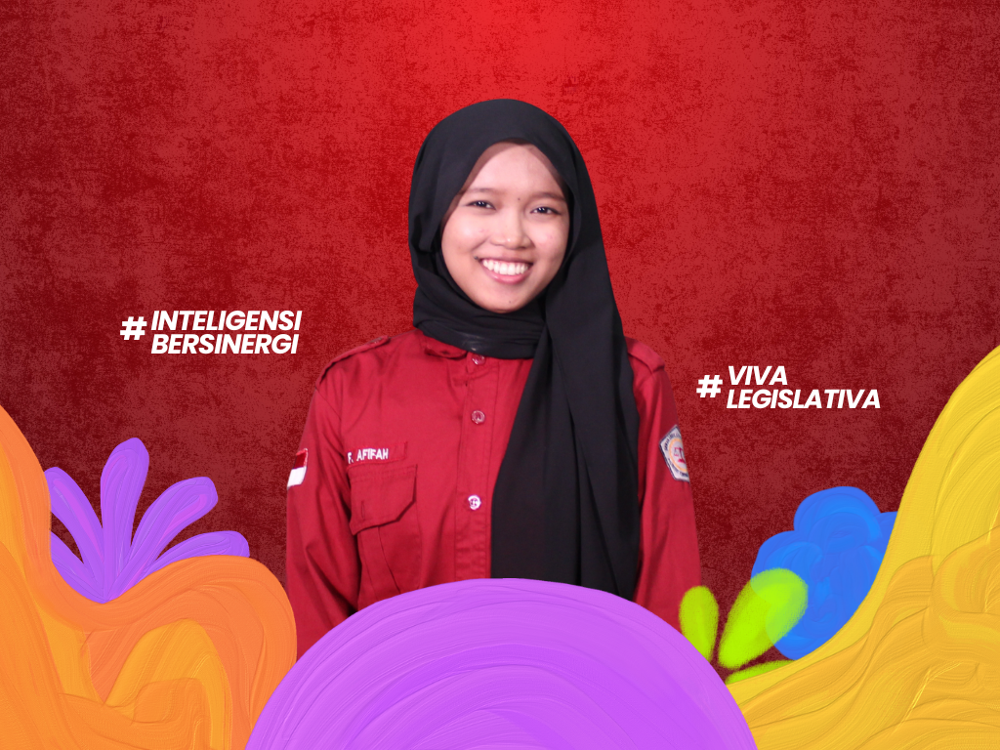
KOORDINATOR KOMISI II
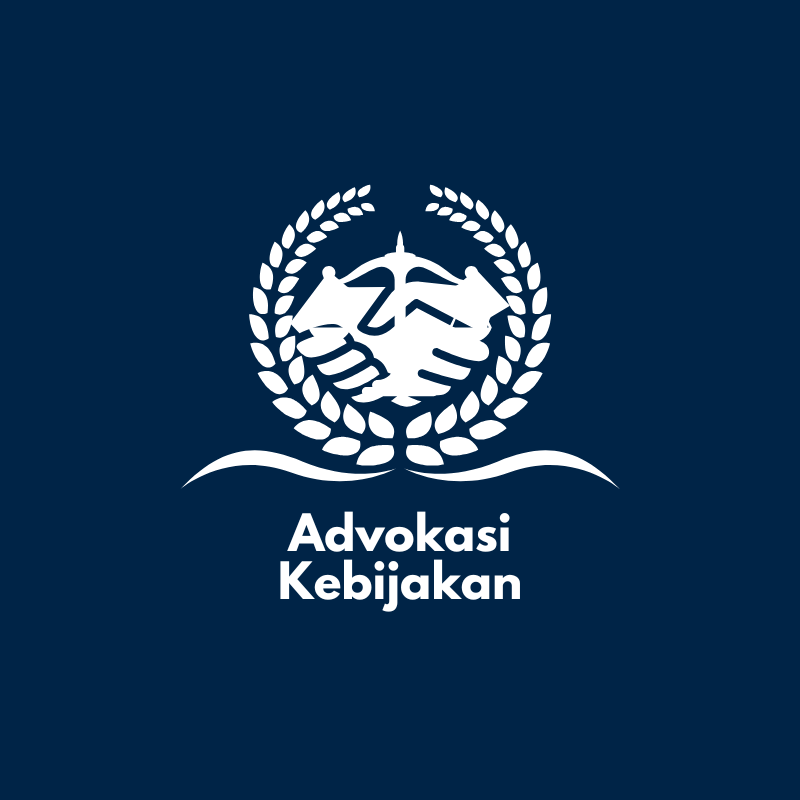
Mengenal lebih dekat Komisi II Dewan Legislatif Mahasiswa Poltekkes Kemenkes Jakarta III Periode 2026.
Halo Mahasiswa Poltekkes Kemenkes Jakarta III!
Perkenalkan kami dari Komisi II Dewan Legislatif Mahasiswa Poltekkes Kemenkes Jakarta III Periode 2026.
Komisi II memiliki peran dalam melakukan advokasi kebijakan, pengelolaan aspirasi mahasiswa terhadap kinerja BEM dan HMJ, serta penyampaian informasi kepada Mahasiswa melalui media sosial Dewan Legislatif Mahasiswa.
Kami percaya bahwa setiap aspirasi memiliki arti. Oleh karena itu, komisi II hadir untuk mendengar, mengawal, dan memperjuangkan suara mahasiswa.
Yuk, kenal lebih dekat dengan anggota Komisi II!

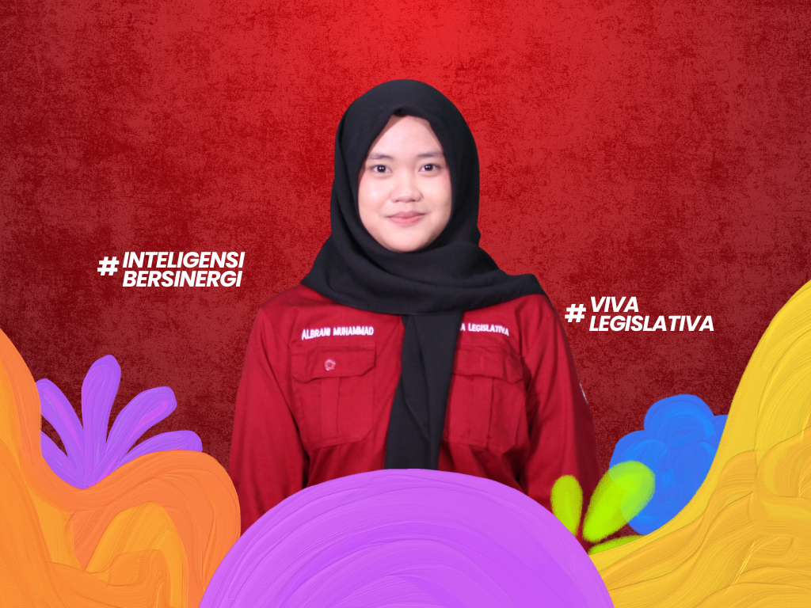
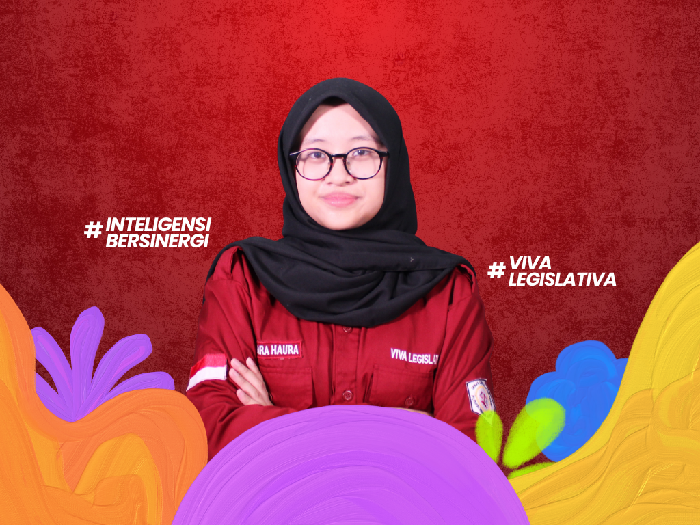
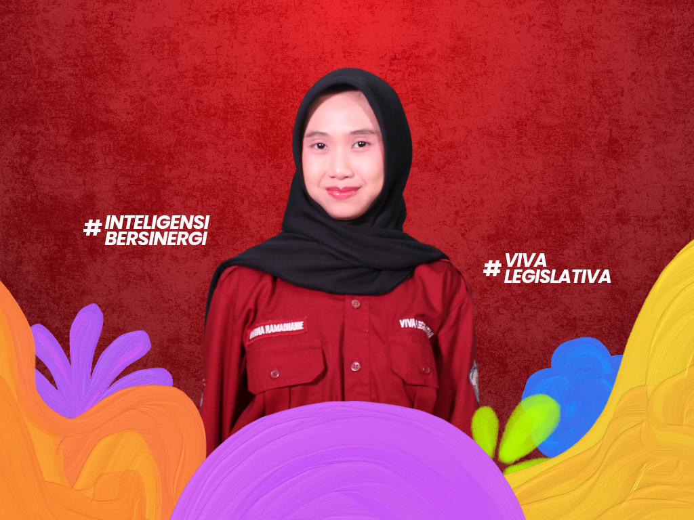
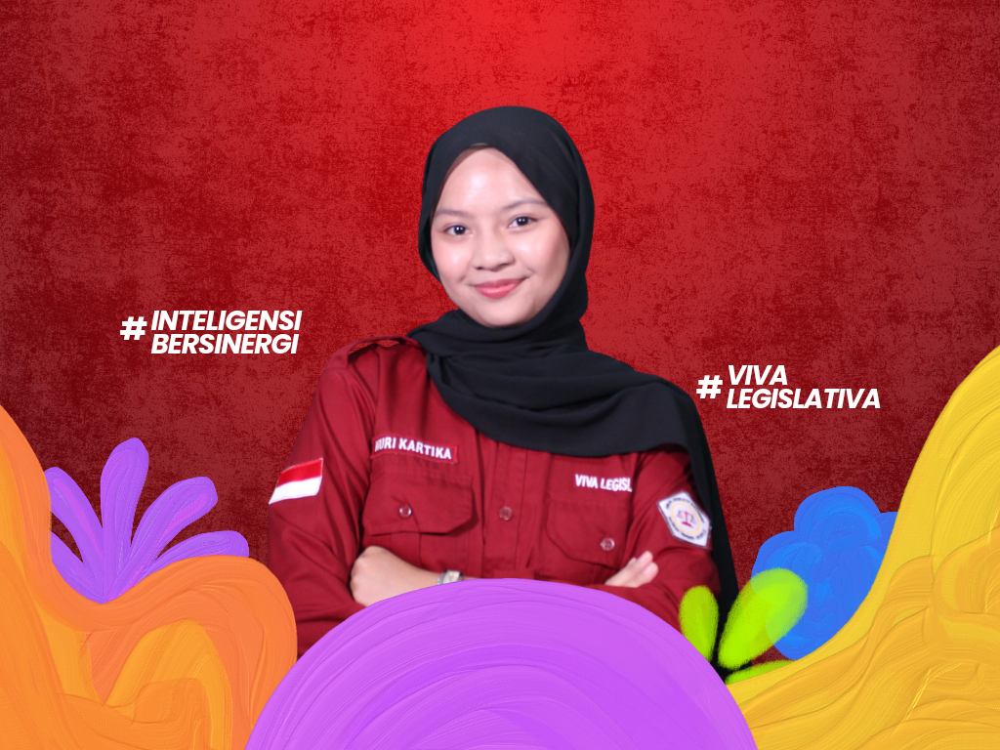

Menjalankan fungsi advokasi, komunikasi, pengawasan, dan pengelolaan aspirasi mahasiswa.
Menyosialisasikan dan mempublikasikan kegiatan DLM Poltekkes Kemenkes Jakarta III kepada mahasiswa dan masyarakat luas melalui media sosial seperti Instagram, X, dan YouTube
Menerima hasil evaluasi dari BEM terhadap aspirasi mahasiswa terkait sarana dan prasarana yang berlaku di lingkungan Poltekkes Kemenkes Jakarta III.
Menyusun program kerja yang akan berjalan selama satu periode kepengurusan agar setiap program dapat terbentuk dan terencana dengan baik serta memiliki tolak ukur dalam setiap prosesnya.
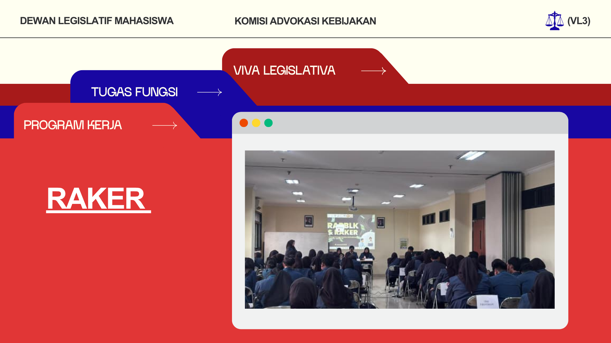
Membuat kalender timeline setiap program kerja LKM Poltekkes Kemenkes Jakarta III agar tidak terjadi benturan program kerja pada hari yang sama.
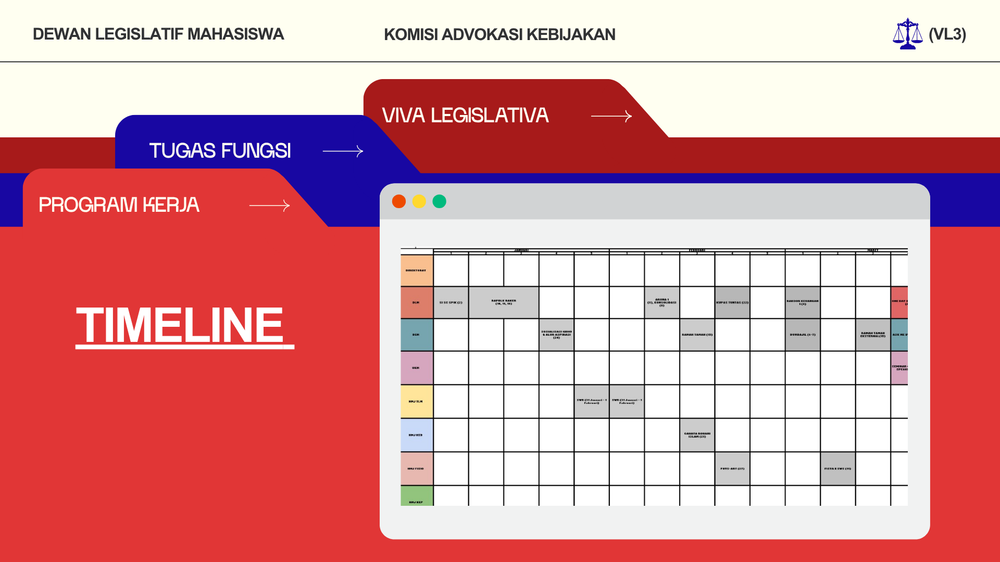
Melakukan pengumpulan kritik dan saran mahasiswa Poltekkes Kemenkes Jakarta III terhadap kinerja BEM dan HMJ dalam menjalankan program kerjanya melalui Google Formulir.
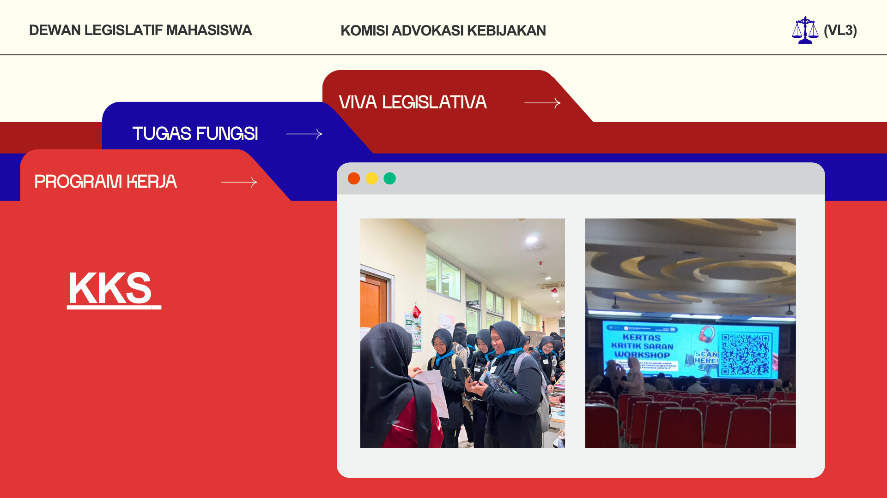
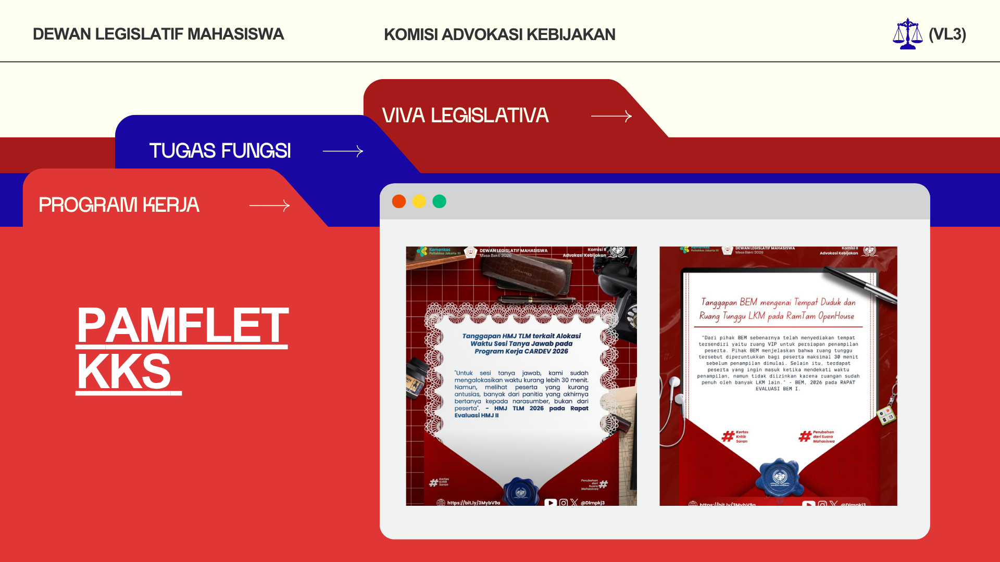
Menyebarkan informasi yang berkaitan dengan hari-hari besar nasional/internasional, publikasi IG TV DLM, dan dokumentasi kegiatan DLM.
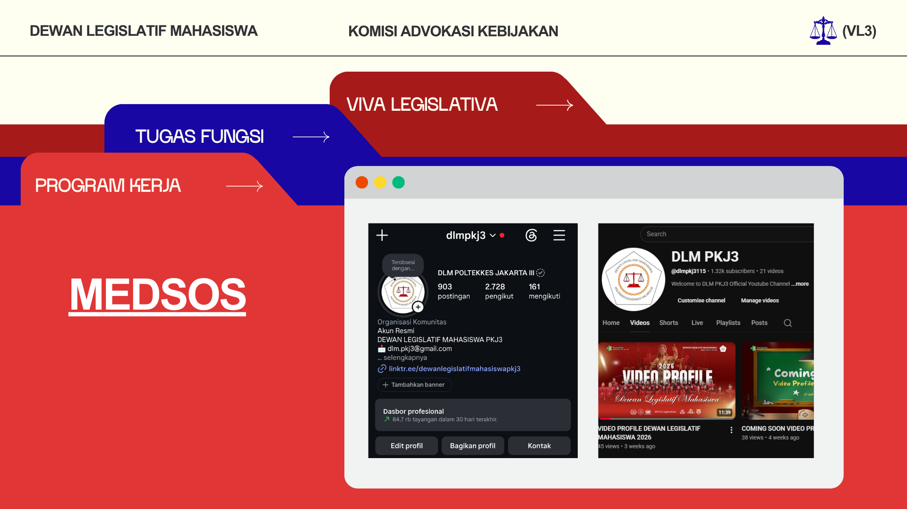
Menyebarkan informasi yang berkaitan dengan visi misi DLM, tugas pokok dari setiap komisi, produk hukum, dan berita acara DLM.
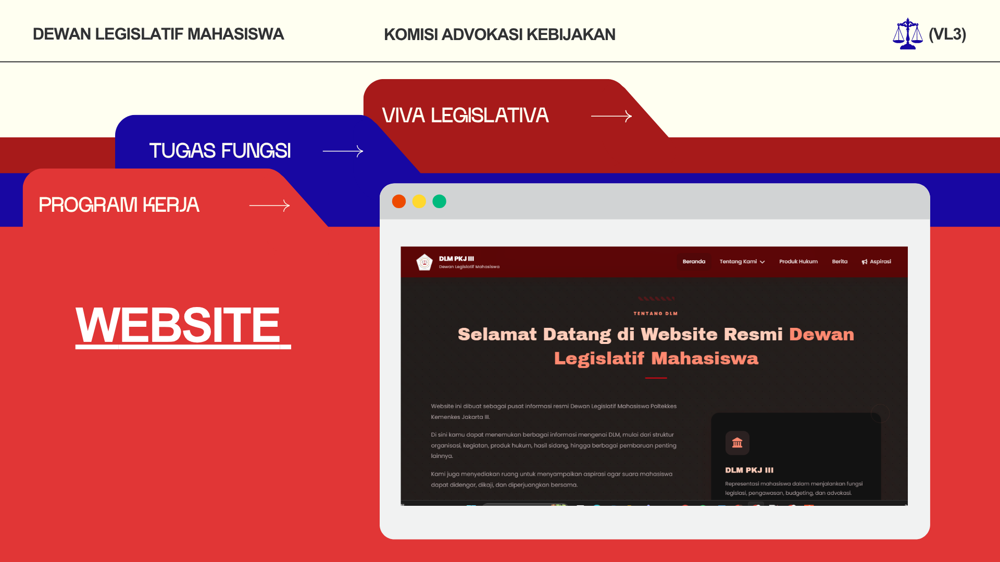
Mengadakan acara talkshow seputar legislatif atau hukum kesehatan.
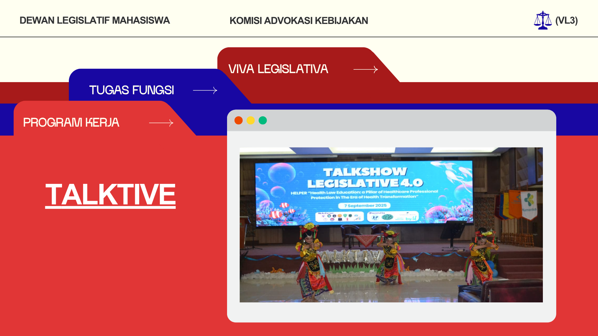